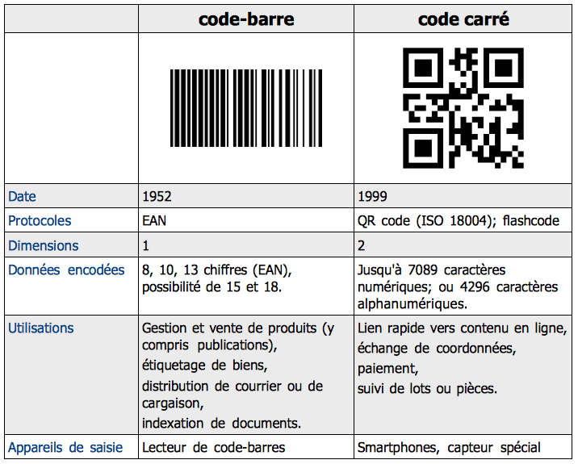

Code QR
Le code QR est un type de code-barres en deux dimensions constitué de modules disposés dans un carré. L'agencement de ces points définit l'information que contient le code.
Cliquez ici pour plus
Code-barres
Un code-barres est la représentation d'une donnée numérique ou alphanumérique sous forme d'un symbole constitué de barres. Il existe des milliers de codes-barres différents ; ceux-ci sont destinés à une lecture automatisée par un capteur électronique, le lecteur de code-barres.
Cliquez ici pour plus
Comparaison des formats code-barres et QR code
